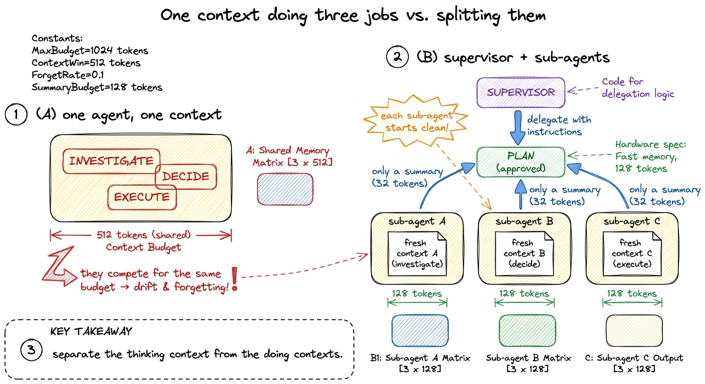
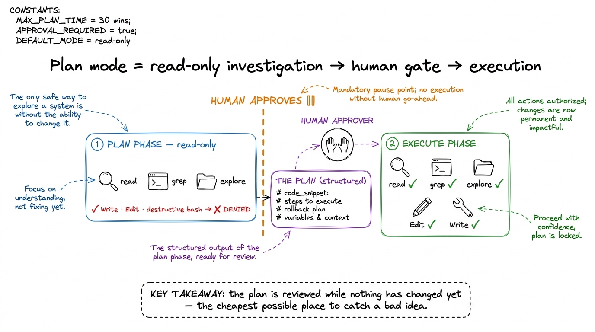
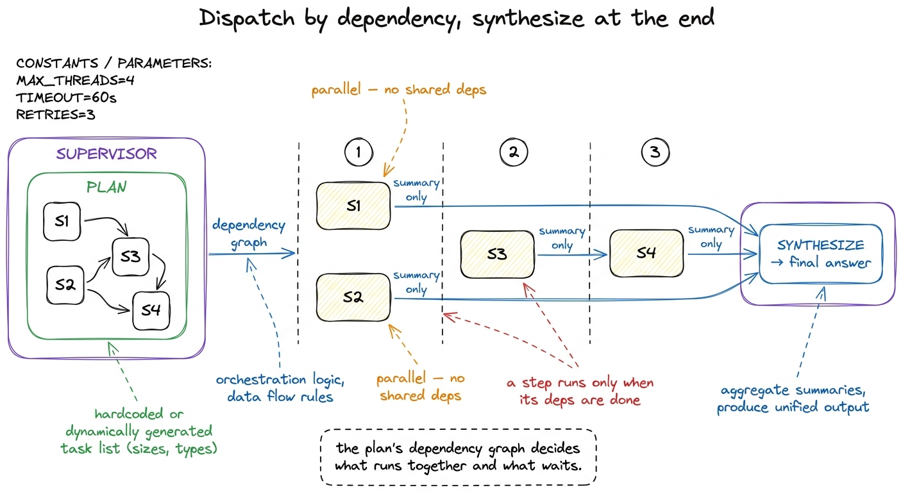

Supervision & plan mode
Give a single agent a big, messy task — "migrate our auth from sessions to JWTs across the whole backend" — and watch it degrade in a way that has nothing to do with intelligence. It reads twelve files, and by the time it edits the third one it has half-forgotten what it learned from the first. It commits to an approach in file one that file eight would have talked it out of, if only file eight's contents were still in the window. It is not that the model got dumber; it is that we asked one context to hold investigation, decision, and execution all at once, and those three jobs fight for the same scarce budget.
The fix is the last layer of the harness, and it is organizational rather than mechanical. Instead of one agent doing everything in one context, we introduce a supervisor that thinks first and acts through others: it investigates, writes a plan, gets that plan approved, then dispatches sub-agents to execute the steps — each in its own fresh context — and synthesizes what they report back. This is the orchestration layer doing its most valuable job, and it is exactly the shape of Claude Code's plan mode and sub-agent system.

figure rendering · A single context that investigates, decides, and executes at once drifWhy a fresh context is the whole trick
Before we talk about plans and parallelism, sit with the one primitive that makes all of it work: a sub-agent runs in its own context window, sees only the instruction the supervisor hands it, and returns only a summary — not its entire transcript.
Think about what that buys you. When the supervisor asks a sub-agent to "find every place we read the session cookie and list the files and line numbers," the sub-agent might read forty files, run six greps, and burn thirty thousand tokens doing it. All of that noise — the file contents, the dead ends, the tool output — stays in the sub-agent's window and dies with it. What comes back to the supervisor is a tidy list of eight locations. The expensive, messy work happened somewhere else, and the supervisor's context stays clean enough to keep reasoning about the whole job.1 This is the same scarcity logic as compaction, attacked from the other side. Compaction shrinks a context after it fills up; sub-agents prevent it from filling in the first place by doing the token-heavy work in a disposable window. Real harnesses use both.
That is the actual engineering content of "sub-agents": not autonomy, not personality — context isolation. A sub-agent is a way to spend tokens without spending your tokens.
Plan mode: think before you touch anything
Now the safety half. The dangerous moment in any capable agent is the gap between deciding what to do and doing it — because by the time you see the edit, it's already made. Plan mode closes that gap by splitting the run into two phases with a human gate between them.
In the first phase, the agent is read-only. It can read files, grep, run investigative shell commands, browse the codebase — but every mutating tool is denied. Write, Edit, and any run_bash that would change state are simply not available to it.2 Claude Code enforces this at the permission layer, not by asking the model nicely. The model cannot call Write in plan mode because the tool is removed from its schema for that phase — the same permission-gate machinery from Layer 2, pointed at a whole mode instead of a single call. Trusting the model to "please don't edit" would not be a safety mechanism. Its only job is to understand the problem and produce a plan. When it's done, it presents that plan to you and stops. Nothing has been changed. You read the plan, and only when you approve it does the agent flip into execution mode, where its hands are unlocked.

figure rendering · Plan mode splits the run: a read-only investigation phase produces a pWhy is this worth a whole mechanism? Because reviewing a plan is enormously cheaper than reviewing a diff. If the agent's approach is wrong — it picked the wrong migration strategy, it missed that two services share the auth code, it's about to touch a file you told it never to touch — you catch it in a paragraph of prose, before a single line changed, instead of in a 400-line diff after the fact. Plan mode moves the human checkpoint to the cheapest possible moment: after the thinking, before the doing.
It's also a quality mechanism, not only a safety one. Forcing the agent to write down its plan makes it reason about the whole task at once instead of discovering the shape of the problem edit-by-edit. The plan is a commitment the agent has to make coherent before it starts, which is exactly the discipline that stops mid-task drift.
Give the plan a shape: structured output
A plan the human reads is nice; a plan the harness can execute is better. So we don't let the plan be free-form prose — we ask the model for structured output: a list of steps, each with enough metadata that the supervisor can dispatch it. This is where planning stops being a vibe and becomes a data structure.
PLAN_SCHEMA = {
"type": "object",
"properties": {
"goal": {"type": "string"},
"steps": {
"type": "array",
"items": {
"type": "object",
"properties": {
"id": {"type": "string"},
"description": {"type": "string"},
"agent_type": {"type": "string"}, # which sub-agent runs it
"depends_on": {"type": "array", "items": {"type": "string"}},
"read_only": {"type": "boolean"},
},
"required": ["id", "description", "agent_type", "depends_on"],
},
},
},
"required": ["goal", "steps"],
}The supervisor calls the model in its read-only phase and asks it to emit a plan matching this schema.3 You can enforce the shape with the provider's structured-output / tool-schema features so the model literally cannot return malformed JSON, or validate-and-retry if you're on a model without it. Either way, the win is the same: the plan becomes machine-readable, so the harness can act on it instead of just displaying it. Two fields are doing quiet, heavy lifting. depends_on turns the flat list into a dependency graph — it tells the supervisor which steps must wait for others and, crucially, which steps don't, so they can run at the same time. And agent_type names which specialized sub-agent should execute the step, which we'll come to in a moment.
Here is the payoff of the whole layer, in about twenty lines: approve the plan, then run it.
def execute_plan(plan, approved_by_human):
if not approved_by_human:
return "plan rejected — nothing executed"
done = {} # step id -> summary it returned
remaining = list(plan["steps"])
while remaining:
# a step is runnable once all its dependencies have finished
ready = [s for s in remaining
if all(dep in done for dep in s["depends_on"])]
# dispatch every ready step AT ONCE — they don't depend on each other
results = run_in_parallel(
lambda s: dispatch_subagent(s["agent_type"], s["description"]),
ready,
)
for step, summary in zip(ready, results):
done[step["id"]] = summary # only the summary comes back
remaining.remove(step)
return synthesize(plan["goal"], done) # supervisor writes the final answerRead what the loop actually does. It repeatedly finds every step whose dependencies are already satisfied, fires all of them at once as parallel sub-agents, collects the one-paragraph summary each returns, and marks them done — until nothing is left. Then it hands the collected summaries to a final synthesize call where the supervisor, back in its own clean context, writes the answer to the original request. The depends_on graph is what makes the parallelism safe: independent steps run together, dependent ones wait their turn automatically.

figure rendering · The supervisor walks the plan's dependency graph in waves — independenSub-agent types: specialists, not clones
Notice we didn't dispatch generic workers — each step named an agent_type. This is the second reason sub-agents earn their keep: you can give each one a narrow system prompt and a restricted toolset, so it's a specialist rather than a general agent that happens to be doing a specific thing.
Claude Code makes this concrete. Its built-in Explore sub-agent is read-only and tuned for fast codebase search; Plan is the read-only researcher that gathers context during plan mode; general-purpose gets all tools for steps that need both reading and writing. You can define your own too — in Claude Code they're just Markdown files with YAML frontmatter under .claude/agents/:
---
name: test-runner
description: Runs the test suite and reports failures. Use after code changes.
tools: Read, Bash, Grep # deliberately no Write / Edit
model: haiku # cheap; this job doesn't need a big model
---
You run the project's tests, read the output, and report exactly which
tests failed and why — file, test name, and the assertion. You do not
fix anything. You return a concise summary, not raw logs.Three fields on that frontmatter are each a real decision. The description is how the supervisor chooses this sub-agent — it's matched against the step's intent, so it must clearly say when to use this worker.4 This mirrors the tool-selection problem from tool schemas as contracts: the supervisor picks a sub-agent the same way a model picks a tool — by reading descriptions. Vague descriptions get the wrong worker dispatched, exactly as vague tool schemas get the wrong tool called. The tools list is a security boundary — a test-runner with no Write cannot accidentally edit code no matter what the model decides, which is the blast-radius principle applied per-role. And model: haiku is a cost lever: routing a mechanical, read-only step to a small cheap model while the supervisor keeps the expensive one for reasoning is often the single biggest cost win in a real harness.
What this layer buys, and where it bites
Stack supervision and plan mode on top of everything before, and the harness graduates from "a capable agent" to "a system you'd trust with a large, ambiguous task." It stays coherent because the supervisor's context never fills with execution noise. It stays safe because nothing mutates until a human approves the plan. It stays fast because independent work runs in parallel. And it stays cheap because heavy steps run on small models in disposable contexts.
Be honest about the costs, though, because this is the layer people over-apply. Every sub-agent is a fresh context that has to be re-briefed from scratch — you pay in tokens and latency for the handoff, and anything the supervisor forgets to include, the sub-agent simply never knows.5 This is the sharpest failure mode of orchestration: a sub-agent given an under-specified instruction confidently does the wrong thing, and the supervisor only finds out from a summary that looks plausible. The handoff protocol — what exactly crosses the boundary — is where most of the real difficulty lives, which is why it gets its own chapter. Parallelism only helps when steps are genuinely independent; force a serial task into parallel workers and you get race conditions on the filesystem instead of a speedup. And a plan is only as good as the investigation behind it — plan mode with a lazy read-only phase produces a confident plan built on a misunderstanding. As Anthropic's own guidance on effective agents puts it, the orchestrator-workers pattern shines precisely when you can't predict the subtasks in advance; for a task with a fixed, obvious shape, a single agent in a loop is simpler and better. Reach for a supervisor when the job is big and open-ended, not to look sophisticated on something small.
That completes the five layers. You started with a bare model that could only answer one question, and you've wrapped it in a loop, given it hands and guardrails, a context engine, durability, and now an organizational layer that plans, delegates, and synthesizes. What's left is not another layer but judgment — deciding when each of these mechanisms is worth its cost — and that judgment is the last thing we build, with a human in the loop for the decisions a harness should never make alone.